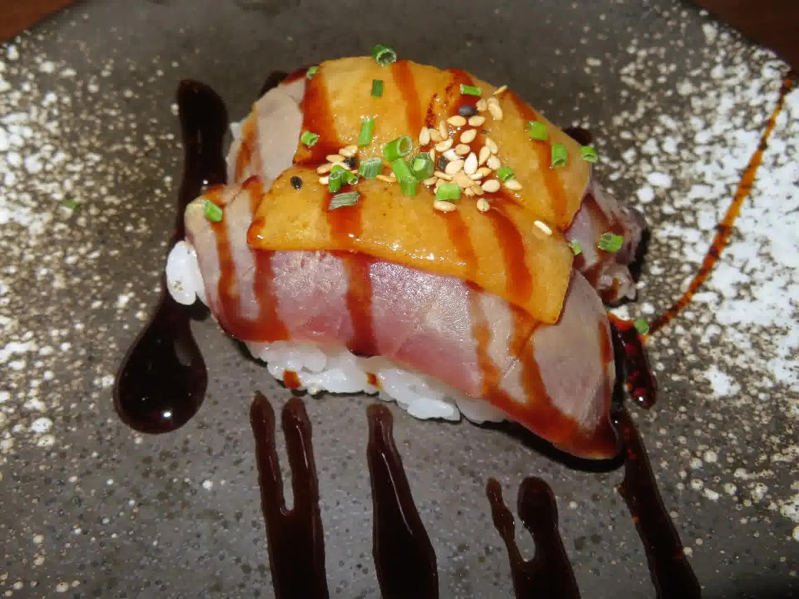
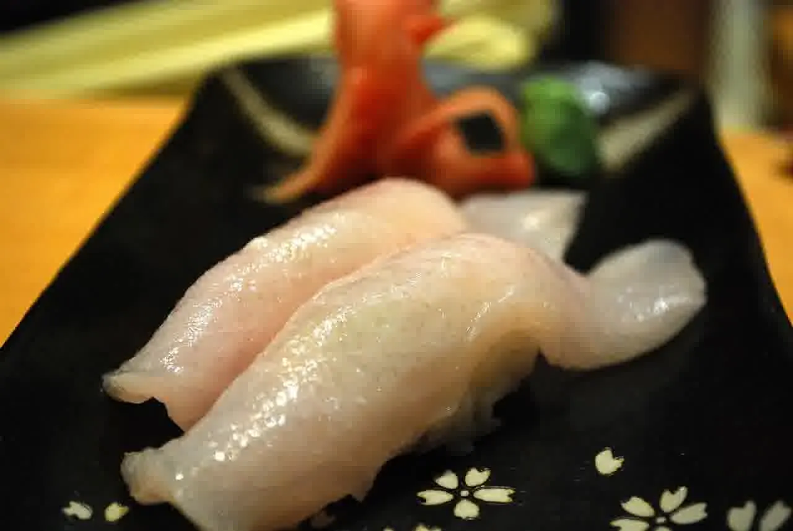
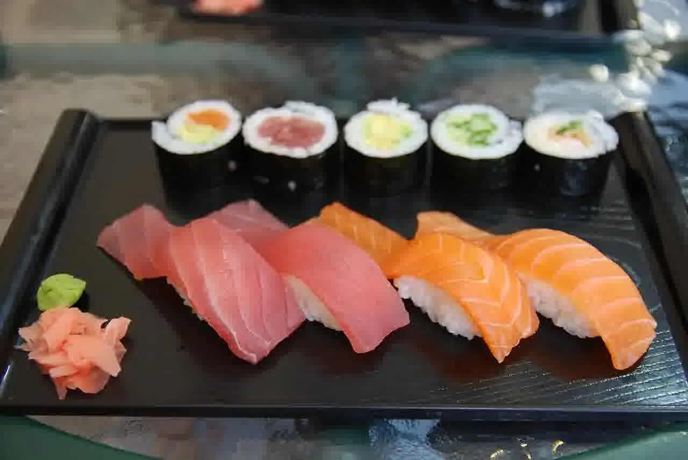

Omakase em Botafogo
Sente no balcão.
O chef decide.
Catorze etapas servidas uma a uma, na sua frente, para oito pessoas por sessão.
A experiência
Um balcão de oito lugares
Cada sessão começa no mesmo horário para todos. O chef serve peça por peça e explica o peixe, o corte e o tempero de cada etapa.
- Duração
- Cerca de 2 horas
- Lugares
- 8 por sessão
- Sessões
- 19h e 21h30

Do balcão

Reserva
Reservar o balcão
Escolha o dia e a sessão. A confirmação chega pelo WhatsApp.
Horários
- Terça a sábado
- 19h e 21h30
- Domingo e segunda
- Fechado